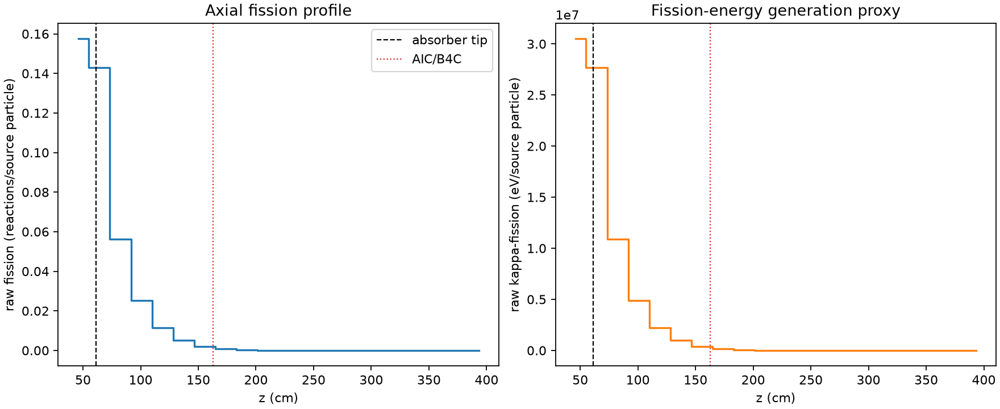
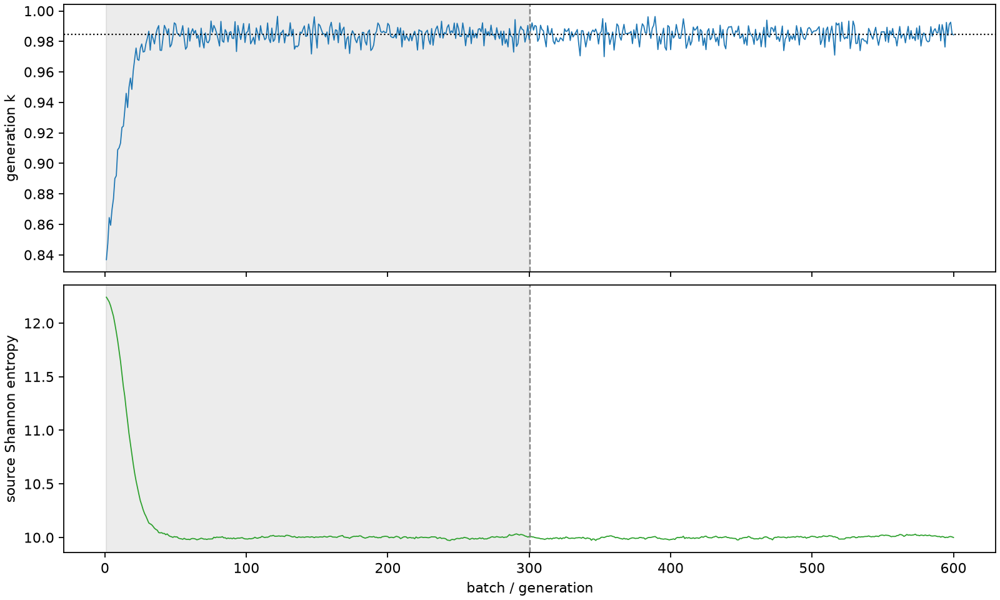

| field | value |
|---|---|
| experiment | V2-STAGE_256_OGRENCI_04-0003 |
| k | 0.9844720695694662 |
| MC standard error | 0.0001919940210865574 |
| seconds | 5232.367018409999 |
| acceptance | not_assessed |
| convergence | review_required |
Completed is output integrity only; physical and statistical review required. Zero tallies do not prove zero production or zero uncertainty.
| diagnostic | value |
|---|---|
| geometric fuel voxels | 5280 |
| zero fission tally voxels | 1386 |
| low signal fuel voxels | 2637 |
| low signal fission share | 0.00015504580301110263 |
| low signal kappa share | 0.00015507833411389506 |
| important fission share | 0.9500321205284745 |
| previous filter included | 2643 |
| duration estimate s | 1562.5173488400023 |
| actual minus estimate s | 3669.849669569997 |
| fission relative MC error | statistics |
|---|---|
| all_geometric_fuel | {"voxels": 5280, "positive_mean_voxels": 3894, "zero_mean_voxels": 1386, "undefined_relative_error_voxels": 1386, "median": 0.05891314775157366, "p95": 0.8797874363432402, "maximum": 1.0000000000000002} |
| low_signal | {"voxels": 2637, "positive_mean_voxels": 1251, "zero_mean_voxels": 1386, "undefined_relative_error_voxels": 1386, "median": 0.5196325151326229, "p95": 1.0, "maximum": 1.0000000000000002} |
| important_95pct | {"voxels": 1050, "positive_mean_voxels": 1050, "zero_mean_voxels": 0, "undefined_relative_error_voxels": 0, "median": 0.0053430999574997536, "p95": 0.010764364291712642, "maximum": 0.011729226148135123} |
| outside_previous_filter | {"voxels": 2637, "positive_mean_voxels": 1251, "zero_mean_voxels": 1386, "undefined_relative_error_voxels": 1386, "median": 0.5196325151326229, "p95": 1.0, "maximum": 1.0000000000000002} |
| kappa_fission relative MC error | statistics |
|---|---|
| all_geometric_fuel | {"voxels": 5280, "positive_mean_voxels": 3894, "zero_mean_voxels": 1386, "undefined_relative_error_voxels": 1386, "median": 0.058827115957597584, "p95": 0.878533105779352, "maximum": 1.0000000000000002} |
| low_signal | {"voxels": 2637, "positive_mean_voxels": 1251, "zero_mean_voxels": 1386, "undefined_relative_error_voxels": 1386, "median": 0.518440817934406, "p95": 1.0, "maximum": 1.0000000000000002} |
| important_95pct | {"voxels": 1050, "positive_mean_voxels": 1050, "zero_mean_voxels": 0, "undefined_relative_error_voxels": 0, "median": 0.005336427852622892, "p95": 0.010749617857114478, "maximum": 0.011712317100025536} |
| outside_previous_filter | {"voxels": 2637, "positive_mean_voxels": 1251, "zero_mean_voxels": 1386, "undefined_relative_error_voxels": 1386, "median": 0.518440817934406, "p95": 1.0, "maximum": 1.0000000000000002} |
| axial bin | fission share | kappa-fission share |
|---|---|---|
| 1 | 0.3922476091480756 | 0.3922036015154601 |
| 2 | 0.35575777557977173 | 0.3557592337588202 |
| 3 | 0.14025882118240923 | 0.1402819784689565 |
| 4 | 0.06294309219598265 | 0.06295367832459751 |
| 5 | 0.028239322784870385 | 0.02824417453947273 |
| 6 | 0.01246736206294452 | 0.012469613311991895 |
| 7 | 0.005187045204141352 | 0.005187913898174075 |
| 8 | 0.0018468607172434277 | 0.0018473900858031553 |
| 9 | 0.0006519726868850817 | 0.0006521741023822658 |
| 10 | 0.0002510088544358163 | 0.0002510803266462147 |
| 11 | 9.561457046757175e-05 | 9.563493581330648e-05 |
| 12 | 3.441800370015514e-05 | 3.442505348079414e-05 |
| 13 | 1.2448890261947393e-05 | 1.2452382077689274e-05 |
| 14 | 5.407257339760354e-06 | 5.408369037929652e-06 |
| 15 | 1.234779685750408e-06 | 1.2348541050123854e-06 |
| 16 | 6.081785026726144e-09 | 6.073180531724245e-09 |
| 17 | 0.0 | 0.0 |
| 18 | 0.0 | 0.0 |
| 19 | 0.0 | 0.0 |
| 20 | 0.0 | 0.0 |
Histories include the inactive-to-active transition at batch 300. kappa-fission approximates fission energy production, not total heat deposition.

